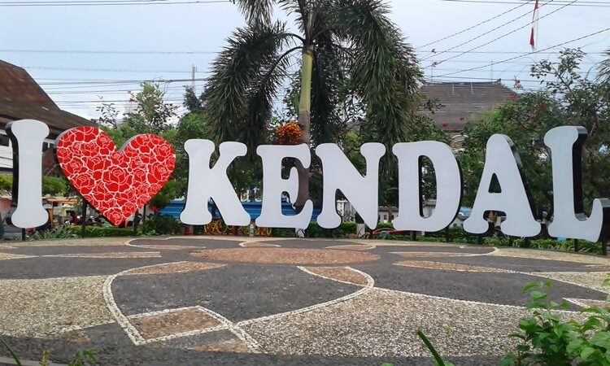
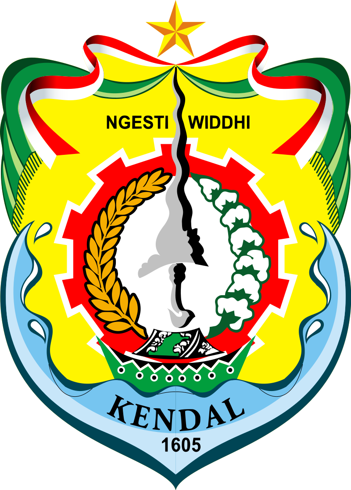
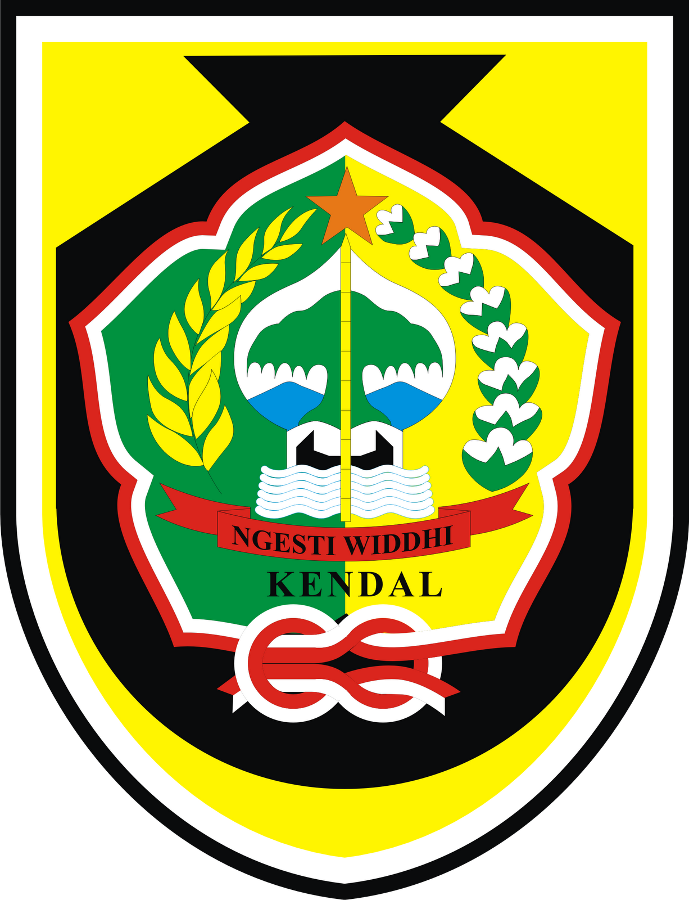
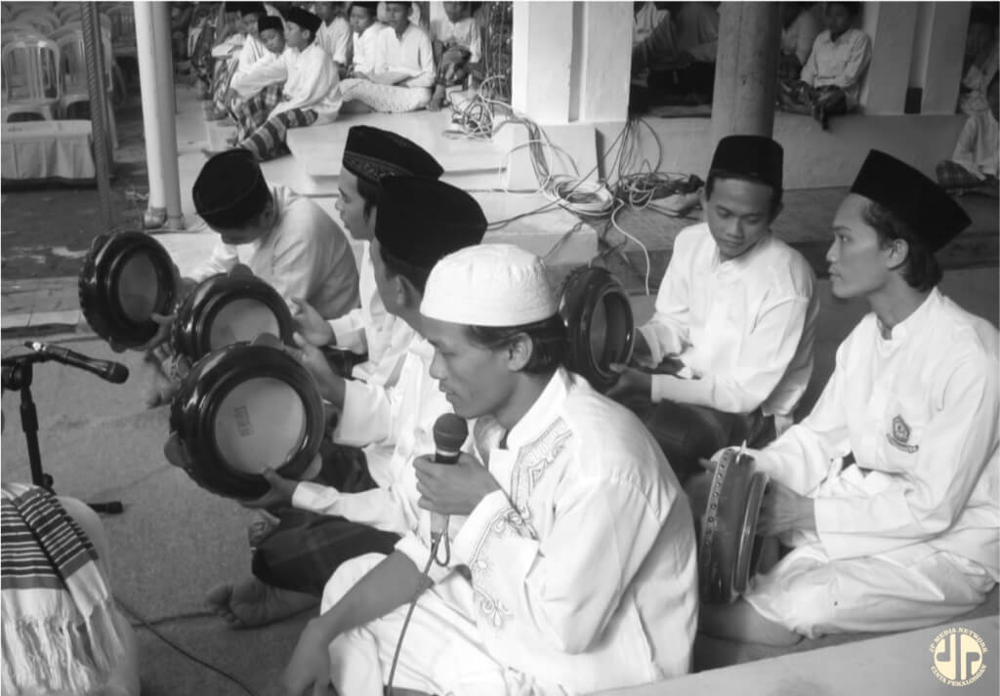

Kendal adalah salah satu kabupaten di provinsi Jawa Tengah, Indonesia. Ibu kotanya ada di kecamatan kendal dan masuk dalam wilayah metropolitan Kedungsapur yang merupakan wilayaj metropolitan terbesar keempat
setelah Jabodetabekpunjur, Gerbangkertosusila, dan Cekungan Bandung. Kabupaten ini berbatasan dengan Laut Jawa di utara,kota Semarang, dan Kabupaten Semarang di timur,kabupaten Temanggung di selatan, serta kabupaten Batang di
barat. Kendal dikenal sebagai kota Santri karena terdapat ribuan Ponpes terutama di Kecamatan Kaliwungu, serta juga dikenal dengan Kota seni dan Budaya.
Tentang Kendal
Sejarah Kendal
Lambang

- perisai kuning yang di atasnya terdapat pita merah putih dan selendang hijau
- motto Ngesti widdhi di antara sebilah keris
- roda gerigi 10 gigi
- padi 28 butir dan kapas 7 kuntum
- perahu bermotif batik mengapung di atas lautan
- nama kendal 1605

Seni dan Budaya
Pakaian Adat

Tari Rodhat

Opak Abang

Simthud Dhuror

Simthud Dhuror, merupakan selawatan untuk memuji junjungan Nabi Muhammad. Kalau di bulan Rabiul Awal (Maulud) diadakan Safari maulud, yaitu acara mauludan secara berkeliling/bergilir di penjuru kota/kabupaten.